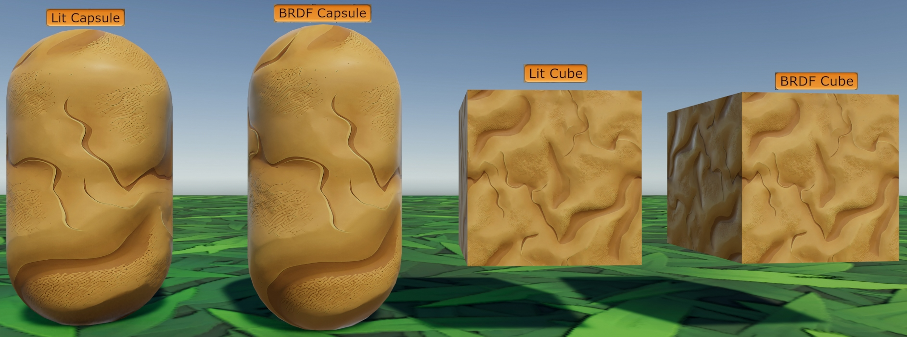
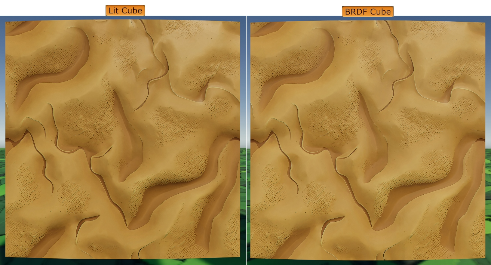
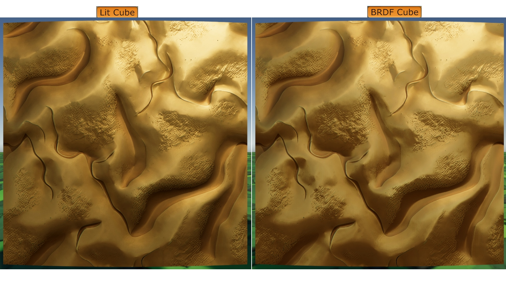

# Unity URP BRDF shader
本篇主要内容是在 Unity URP 中实现 BRDF shader
BRDF 理论部分在这篇文章中讲解。
Unity 版本：Unity 6.0
渲染路径：Forward / Forward+
# 代码
# BRDF
- 经典的 BRDF 模型只描述单次表面反射，这会导致渲染结果偏暗。为了解决这个问题，需要做多次散射补偿。
- 为了防止结果偏暗，本篇使用简单的经验参数近似。
- 符合物理的多次散射可以使用 Kulla-Conty 近似，其理论部分在这篇文章中讲解。
- 环境光照使用拟合预计算的 BRDF LUT
// GGX normal distribution function | |
// GGX 法线分布函数 | |
// GGX 用于描述微表面模型中微观几何表面法线的概率分布 | |
// Unity 中已经定义了 D_GGX，为了防止冲突这里换一个名字 | |
float D_GGX_1(float NdotH, float roughness) | |
{ | |
float a = roughness * roughness; | |
float a2 = a * a; | |
float denom = (NdotH * NdotH * (a2 - 1) + 1); | |
return a2 / (PI * denom * denom); | |
} | |
// Smith geometric occlusion function | |
// Smith 几何遮蔽函数 | |
// 几何遮蔽 (G) 在 BRDF 中用于模拟微表面间的自阴影和遮蔽效应 | |
float V_Smith(float NdotV, float NdotL, float roughness) | |
{ | |
// Smith-GGX 高度相关几何遮蔽，性能优化版 | |
// 这里返回的是 V = G / (4 * NdotL * NdotV) | |
float a = roughness * roughness; | |
float a2 = a * a; | |
float v = NdotL * sqrt(NdotV * NdotV * (1 - a2) + a2); | |
float l = NdotV * sqrt(NdotL * NdotL * (1 - a2) + a2); | |
return 0.5 / max(v + l, 0.001); | |
// G_Smith | |
// 原始 GGX 高度相关几何遮蔽 的实现，后续还要 除以 4 * NdotV * NdotL | |
//float r = pow(roughness, 4); | |
//float k = 2 * NdotL * NdotV; | |
//float v = NdotL * sqrt(r + (1 - r) * pow(NdotV, 2)); | |
//float l = NdotV * sqrt(r + (1 - r) * pow(NdotL, 2)); | |
//return k / max(v + l, 0.001); | |
// UE4 的实现 | |
//float a = roughness * roughness; | |
//float v = NdotL * (NdotV * (1 - a) + a); | |
//float l = NdotV * (NdotL * (1 - a) + a); | |
//return 0.5 / max(v + l, 0.001); | |
// Unity HDRP 的实现 | |
//float a = roughness; | |
//float v = NdotL * (NdotV * (1 - a) + a); | |
//float l = NdotV * sqrt(NdotL * NdotL * (1 - a * a) + a * a); | |
//return 0.5 / max(v + l, 0.001); | |
} | |
// Schlick Fresnel | |
// Schlick 菲涅尔近似 | |
// 菲涅尔是指光照基于观察者的角度来形成不同强度反射的现象 | |
half3 F_Schlick(float HdotV, half3 F0) | |
{ | |
return F0 + (1 - F0) * pow(1 - HdotV, 5); | |
} | |
// 拟合预计算的 BRDF LUT (Scale 和 Bias) | |
// Brian Karis 在 "Real Shading in Unreal Engine 4" 中提出的一个经验公式，用于近似环境光照中高光部分的 BRDF 效果 | |
float3 EnvBRDFApprox(half3 f0, float roughness, float NdotV) | |
{ | |
// 这里的常数是针对 GGX 分布的拟合结果 | |
const float4 c0 = { -1, -0.0275, -0.572, 0.022 }; | |
const float4 c1 = { 1, 0.0425, 1.04, -0.04 }; | |
// 计算受粗糙度影响的中间系数 r | |
// 描述了不同粗糙度下反射能量的分布规律 | |
float4 r = roughness * c0 + c1; | |
// 模拟菲涅尔项随角度变化的响应 (Grazing Angle 补偿) | |
//exp2 (-9.28 * NdotV) 是一个非常经典的经验拟合公式，用于模拟物体边缘（掠射角）处，反射率由于菲涅尔效应急剧增加的曲线 | |
float angularResponse = min(r.x * r.x, exp2(-9.28 * NdotV)) * r.x + r.y; | |
// 得到 A (Scale) 和 B (Bias) | |
// 这里的常数 float2 (-1.04, 1.04) 是为了将前面的 angularResponse 映射回正确的积分能量区间 | |
float2 AB = float2(-1.04, 1.04) * angularResponse + r.zw; | |
// 最终结合 F0 | |
// 这个结果直接对应了单次散射下，物体在 IBL 环境中的高光反射率 | |
return f0 * AB.x + AB.y; | |
} | |
half3 DirectBRDF(float3 mainlightDirWS, InputData inputData, SurfaceData surfaceData) | |
{ | |
// 半角向量 | |
float3 halfDir = normalize(mainlightDirWS + inputData.viewDirectionWS); | |
// 各种角度余弦值 | |
float NdotL = saturate(dot(inputData.normalWS, mainlightDirWS)); | |
float NdotV = saturate(dot(inputData.normalWS, inputData.viewDirectionWS)); | |
float NdotH = saturate(dot(inputData.normalWS, halfDir)); | |
float VdotH = saturate(dot(inputData.viewDirectionWS, halfDir)); | |
// 粗糙度 | |
float roughness = max(1 - surfaceData.smoothness, 0.001); | |
// 金属度影响菲涅尔反射率 | |
half3 F0 = lerp((half3)0.04.xxx, surfaceData.albedo, surfaceData.metallic); | |
// 单次反射 | |
float D = D_GGX_1(NdotH, roughness); | |
float V = V_Smith(NdotV, NdotL, roughness); | |
half3 F = F_Schlick(VdotH, F0); | |
half3 specular = D * V * F; | |
// 多次散射 | |
// 为了防止结果偏暗，这里使用简单的经验参数近似 | |
specular *= 3; | |
half3 kd = (1 - F) * (1 - surfaceData.metallic); | |
// 在物理公式中，Lambert 漫反射需要除以 PI 来保证能量守恒: kd * albedo / PI | |
// 但在部分游戏引擎中，光源的强度已经隐含了 PI 的补偿。此时除以 PI 会导致物体的亮度下降 | |
half3 diffuse = kd * surfaceData.albedo; | |
return (diffuse + specular) * NdotL; | |
} | |
// 间接光照的 BRDF 计算 | |
half3 IndirectBRDF(InputData inputData, SurfaceData surfaceData) | |
{ | |
float NdotV = saturate(dot(inputData.normalWS, inputData.viewDirectionWS)); | |
float roughness = max(1 - surfaceData.smoothness, 0.001); | |
float a = roughness * roughness; | |
half3 F0 = lerp((half3)0.04.xxx, surfaceData.albedo, surfaceData.metallic); | |
// 间接漫反射 (使用 SH 环境球谐) | |
half3 indirectDiffuse = SampleSH(inputData.normalWS) * surfaceData.albedo * (1 - surfaceData.metallic); | |
// 间接高光 (使用反射探针) | |
float3 reflectVector = reflect(-inputData.viewDirectionWS, inputData.normalWS); | |
half3 indirectSpecular = GlossyEnvironmentReflection(reflectVector, inputData.positionWS, a, surfaceData.occlusion, inputData.normalizedScreenSpaceUV); | |
// 使用近似 LUT 补偿能量，这一步会根据 NdotV 和 Roughness 计算出高光反射的比例 | |
indirectSpecular *= EnvBRDFApprox(F0, a, NdotV); | |
return indirectDiffuse + indirectSpecular; | |
} |
# Shader
- 为了兼容 SRP Batcher 需要单独写一个 CBUFFER
TEXTURE2D(_BaseMap); | |
SAMPLER(sampler_BaseMap); | |
TEXTURE2D(_BumpMap); | |
SAMPLER(sampler_BumpMap); | |
CBUFFER_START(UnityPerMaterial) | |
float4 _BaseMap_ST; | |
float4 _BumpMap_ST; | |
float _BumpScale; | |
float _Metallic; | |
float _Smoothness; | |
half4 _BaseColor; | |
CBUFFER_END |
- Shader 部分包含 UniversalForward、ShadowCaster、DepthOnly、DepthNormals
Shader "Unlit/MyBRDF" | |
{ | |
Properties | |
{ | |
_BaseMap("Base Map", 2D) = "white" {} | |
_BaseColor("Base Color", Color) = (1, 1, 1, 1) | |
_BumpMap("Normal Map", 2D) = "bump" {} | |
_BumpScale("Bump Scale", float) = 1 | |
_Metallic("Metallic", Range(0, 1)) = 0 | |
_Smoothness("Smoothness", Range(0, 1)) = 0.5 | |
} | |
SubShader | |
{ | |
Tags | |
{ | |
"RenderType" = "Opaque" | |
"RenderPipeline" = "UniversalPipeline" | |
} | |
LOD 100 | |
Pass | |
{ | |
Name "MyForward" | |
Tags | |
{ | |
"LightMode" = "UniversalForward" | |
} | |
HLSLPROGRAM | |
#pragma target 3.0 | |
// 顶点 / 片元入口 | |
#pragma vertex vert | |
#pragma fragment frag | |
// 雾效 | |
#pragma multi_compile_fog | |
// Forward+ | |
#pragma multi_compile _ _FORWARD_PLUS | |
// 主光源阴影 | |
#pragma multi_compile _ _MAIN_LIGHT_SHADOWS | |
#pragma multi_compile _ _MAIN_LIGHT_SHADOWS_CASCADE | |
// 额外光源（逐顶点 / 逐像素） | |
#pragma multi_compile _ _ADDITIONAL_LIGHTS_VERTEX _ADDITIONAL_LIGHTS | |
// 额外光源阴影 | |
#pragma multi_compile _ _ADDITIONAL_LIGHT_SHADOWS | |
// 软阴影 | |
#pragma multi_compile _ _SHADOWS_SOFT | |
#include "Packages/com.unity.render-pipelines.universal/ShaderLibrary/Core.hlsl" | |
#include "Packages/com.unity.render-pipelines.universal/ShaderLibrary/Lighting.hlsl" | |
#include "Assets/Shaders/BRDF/MyInput.hlsl" | |
#include "Assets/Shaders/BRDF/MyBRDF.hlsl" | |
struct Attributes | |
{ | |
float4 positionOS : POSITION; | |
float3 normalOS : NORMAL; | |
float4 tangentOS : TANGENT; | |
float4 texcoord : TEXCOORD0; | |
}; | |
struct Varyings | |
{ | |
float4 positionCS : SV_POSITION; | |
float4 uv : TEXCOORD0; | |
float3 positionWS : TEXCOORD1; | |
float3 normalWS : TEXCOORD2; | |
float4 tangentWS : TEXCOORD3; | |
#ifdef _ADDITIONAL_LIGHTS_VERTEX | |
// x: fogFactor, yzw: vertex light | |
half4 fogFactorAndVertexLight : TEXCOORD4; | |
#else | |
half fogFactor : TEXCOORD4; | |
#endif | |
}; | |
void InitializeSurfaceData(float4 uv, out SurfaceData outSurfaceData) | |
{ | |
outSurfaceData = (SurfaceData)0; | |
// 纹理 | |
half4 albedo = SAMPLE_TEXTURE2D(_BaseMap, sampler_BaseMap, uv.xy); | |
outSurfaceData.alpha = albedo.a; | |
outSurfaceData.albedo = albedo.rgb * _BaseColor.rgb; | |
outSurfaceData.albedo = AlphaModulate(outSurfaceData.albedo, outSurfaceData.alpha); | |
// 法线 | |
half4 packedNormal = SAMPLE_TEXTURE2D(_BumpMap, sampler_BumpMap, uv.zw); | |
outSurfaceData.normalTS = UnpackNormalScale(packedNormal, _BumpScale); | |
outSurfaceData.metallic = _Metallic; | |
outSurfaceData.smoothness = _Smoothness; | |
outSurfaceData.occlusion = 1; | |
} | |
void InitializeInputData(Varyings input, float3 normalTS, out InputData inputData) | |
{ | |
inputData = (InputData)0; | |
inputData.positionWS = input.positionWS; | |
inputData.viewDirectionWS = GetWorldSpaceNormalizeViewDir(input.positionWS); | |
float sign = input.tangentWS.w; | |
float3 bitangentWS = sign * cross(input.normalWS.xyz, input.tangentWS.xyz); | |
inputData.tangentToWorld = half3x3(input.tangentWS.xyz, bitangentWS.xyz, input.normalWS.xyz); | |
// mul(normalTS, tangentToWorld) | |
inputData.normalWS = TransformTangentToWorld(normalTS, inputData.tangentToWorld, true); | |
// 归一化的屏幕 UV | |
inputData.normalizedScreenSpaceUV = GetNormalizedScreenSpaceUV(input.positionCS); | |
// 计算阴影坐标 | |
inputData.shadowCoord = TransformWorldToShadowCoord(inputData.positionWS); | |
// 计算雾效坐标 | |
#ifdef _ADDITIONAL_LIGHTS_VERTEX | |
inputData.fogCoord = InitializeInputDataFog(float4(input.positionWS, 1.0), input.fogFactorAndVertexLight.x); | |
inputData.vertexLighting = input.fogFactorAndVertexLight.yzw; | |
#else | |
inputData.fogCoord = InitializeInputDataFog(float4(input.positionWS, 1.0), input.fogFactor); | |
#endif | |
} | |
Varyings vert (Attributes i) | |
{ | |
Varyings o; | |
o.positionWS = TransformObjectToWorld(i.positionOS.xyz); | |
o.positionCS = TransformWorldToHClip(o.positionWS); | |
o.normalWS = TransformObjectToWorldNormal(i.normalOS); | |
o.tangentWS.xyz = TransformObjectToWorldDir(i.tangentOS.xyz); | |
o.tangentWS.w = i.tangentOS.w; | |
o.uv.xy = TRANSFORM_TEX(i.texcoord, _BaseMap); | |
o.uv.zw = TRANSFORM_TEX(i.texcoord, _BumpMap); | |
half3 vertexLight = VertexLighting(o.positionWS, o.normalWS); | |
half fogFactor = 0; | |
#if !defined(_FOG_FRAGMENT) | |
fogFactor = ComputeFogFactor(o.positionCS.z); | |
#endif | |
#ifdef _ADDITIONAL_LIGHTS_VERTEX | |
o.fogFactorAndVertexLight = half4(fogFactor, vertexLight); | |
#else | |
o.fogFactor = fogFactor; | |
#endif | |
return o; | |
} | |
half4 frag (Varyings i) : SV_Target | |
{ | |
// SurfaceData | |
SurfaceData surfaceData; | |
InitializeSurfaceData(i.uv, surfaceData); | |
// InputData | |
InputData inputData; | |
InitializeInputData(i, surfaceData.normalTS, inputData); | |
// 主光源 | |
Light mainLight = GetMainLight(inputData.shadowCoord); | |
half3 mainlightDirWS = normalize(mainLight.direction); | |
// 直接光 | |
half3 directBRDF = DirectBRDF(mainlightDirWS, inputData, surfaceData); | |
half3 diffuse = directBRDF * mainLight.color * mainLight.shadowAttenuation; | |
// 额外光源 | |
#ifdef _ADDITIONAL_LIGHTS | |
uint lightCount = GetAdditionalLightsCount(); | |
LIGHT_LOOP_BEGIN(lightCount) | |
Light light = GetAdditionalLight(lightIndex, inputData.positionWS, half4(1, 1, 1, 1)); | |
float3 addBRDF = DirectBRDF(normalize(light.direction), inputData, surfaceData); | |
diffuse += addBRDF * light.color * light.distanceAttenuation * light.shadowAttenuation; | |
LIGHT_LOOP_END | |
#endif | |
// 环境光 | |
half3 indirectBRDF = IndirectBRDF(inputData, surfaceData); | |
// 最终颜色 | |
half4 finalColor = half4(diffuse + indirectBRDF, surfaceData.alpha); | |
finalColor.rgb = MixFog(finalColor.rgb, inputData.fogCoord); | |
return finalColor; | |
} | |
ENDHLSL | |
} | |
Pass | |
{ | |
Name "MyShadowCaster" | |
Tags | |
{ | |
"LightMode" = "ShadowCaster" | |
} | |
ZTest LEqual | |
ColorMask 0 | |
HLSLPROGRAM | |
#pragma target 3.0 | |
#pragma vertex ShadowPassVertex | |
#pragma fragment ShadowPassFragment | |
// 在生成阴影贴图时用于区分方向光阴影和点光源阴影，因为它们使用不同的公式来应用法线偏移。 | |
#pragma multi_compile_vertex _ _CASTING_PUNCTUAL_LIGHT_SHADOW | |
#include "Packages/com.unity.render-pipelines.universal/ShaderLibrary/Core.hlsl" | |
#include "Packages/com.unity.render-pipelines.universal/ShaderLibrary/Shadows.hlsl" | |
struct Attributes | |
{ | |
float4 positionOS : POSITION; | |
float3 normalOS : NORMAL; | |
}; | |
struct Varyings | |
{ | |
float4 positionCS : SV_POSITION; | |
}; | |
CBUFFER_START(UnityPerFrame) | |
float3 _LightDirection; | |
float3 _LightPosition; | |
CBUFFER_END | |
float4 GetShadowPositionHClip(Attributes input) | |
{ | |
float3 positionWS = TransformObjectToWorld(input.positionOS.xyz); | |
float3 normalWS = TransformObjectToWorldNormal(input.normalOS); | |
#if _CASTING_PUNCTUAL_LIGHT_SHADOW | |
float3 lightDirectionWS = normalize(_LightPosition - positionWS); | |
#else | |
float3 lightDirectionWS = _LightDirection; | |
#endif | |
float4 positionCS = TransformWorldToHClip(ApplyShadowBias(positionWS, normalWS, lightDirectionWS)); | |
positionCS = ApplyShadowClamping(positionCS); | |
return positionCS; | |
} | |
Varyings ShadowPassVertex(Attributes input) | |
{ | |
Varyings output; | |
output.positionCS = GetShadowPositionHClip(input); | |
return output; | |
} | |
half4 ShadowPassFragment(Varyings input) : SV_TARGET | |
{ | |
return 0; | |
} | |
ENDHLSL | |
} | |
Pass | |
{ | |
Name "MyDepthOnly" | |
Tags | |
{ | |
"LightMode" = "DepthOnly" | |
} | |
ZWrite On | |
ColorMask R | |
HLSLPROGRAM | |
#pragma target 3.0 | |
#pragma vertex DepthOnlyVertex | |
#pragma fragment DepthOnlyFragment | |
#include "Packages/com.unity.render-pipelines.universal/ShaderLibrary/Core.hlsl" | |
struct Attributes | |
{ | |
float4 positionOS : POSITION; | |
}; | |
struct Varyings | |
{ | |
float4 positionCS : SV_POSITION; | |
}; | |
Varyings DepthOnlyVertex(Attributes input) | |
{ | |
Varyings output; | |
output.positionCS = TransformObjectToHClip(input.positionOS.xyz); | |
return output; | |
} | |
half DepthOnlyFragment(Varyings input) : SV_TARGET | |
{ | |
return input.positionCS.z; | |
} | |
ENDHLSL | |
} | |
Pass | |
{ | |
Name "MyDepthNormals" | |
Tags | |
{ | |
"LightMode" = "DepthNormals" | |
} | |
ZWrite On | |
HLSLPROGRAM | |
#pragma target 3.0 | |
#pragma vertex DepthNormalsVertex | |
#pragma fragment DepthNormalsFragment | |
#include "Packages/com.unity.render-pipelines.universal/ShaderLibrary/Core.hlsl" | |
#include "Assets/Shaders/BRDF/MyInput.hlsl" | |
struct Attributes | |
{ | |
float4 positionOS : POSITION; | |
float4 tangentOS : TANGENT; | |
float3 normal : NORMAL; | |
float2 texcoord : TEXCOORD0; | |
}; | |
struct Varyings | |
{ | |
float4 positionCS : SV_POSITION; | |
float4 uv : TEXCOORD0; | |
float3 normalWS : TEXCOORD1; | |
float4 tangentWS : TEXCOORD2; | |
}; | |
Varyings DepthNormalsVertex(Attributes input) | |
{ | |
Varyings output; | |
VertexPositionInputs vertexInput = GetVertexPositionInputs(input.positionOS.xyz); | |
VertexNormalInputs normalInput = GetVertexNormalInputs(input.normal, input.tangentOS); | |
output.positionCS = vertexInput.positionCS; | |
output.normalWS = normalInput.normalWS; | |
output.tangentWS.xyz = normalInput.tangentWS.xyz; | |
output.tangentWS.w = input.tangentOS.w; | |
// 透明剪裁需要贴图的 alpha | |
//output.uv.xy = TRANSFORM_TEX(input.texcoord, _BaseMap); | |
output.uv.zw = TRANSFORM_TEX(input.texcoord, _BumpMap); | |
return output; | |
} | |
half4 DepthNormalsFragment(Varyings input) : SV_Target | |
{ | |
// 透明剪裁 | |
// 需要 _Cutoff 属性 | |
//#if defined(_ALPHATEST_ON) | |
// Alpha(SampleAlbedoAlpha(input.uv.xy, TEXTURE2D_ARGS(_BaseMap, sampler_BaseMap)).a, _BaseColor, _Cutoff); | |
//#endif | |
// 计算法线 | |
float3 bitangent = input.tangentWS.w * cross(input.normalWS.xyz, input.tangentWS.xyz); | |
half4 packedNormal = SAMPLE_TEXTURE2D(_BumpMap, sampler_BumpMap, input.uv.zw); | |
float3 normalTS = UnpackNormalScale(packedNormal, _BumpScale); | |
float3 normalWS = TransformTangentToWorld(normalTS, half3x3(input.tangentWS.xyz, bitangent.xyz, input.normalWS.xyz)); | |
half4 outNormalWS = half4(NormalizeNormalPerPixel(normalWS), 0); | |
return outNormalWS; | |
} | |
ENDHLSL | |
} | |
} | |
} |
# 效果
Metallic = 0
Smoothness = 0.5


Metallic = 1
Smoothness = 0.5
